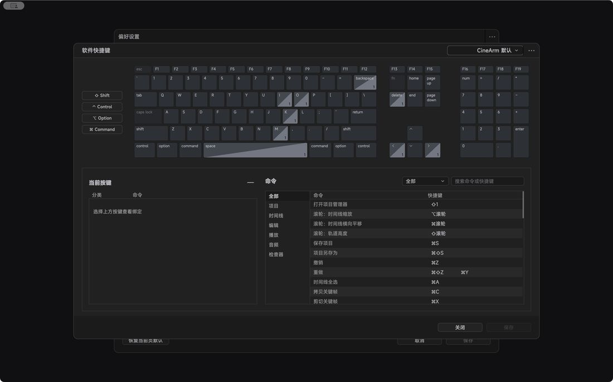

功能详解 / 快捷键：常用动作都有默认键
快捷键：常用动作都有默认键
常用动作都有默认键，也可以全部改成自己顺手的。
覆盖高频操作保存、撤销、播放、记录、音频标记都有默认键。
全部可改每条命令最多四组键，冲突会提示。
配置可带走键盘配置能导出给同事，换机器不用重设。
键盘也能推用键盘就能连续推动机械臂。
手柄更连续手柄可以连续控制，故障时还会震动提示。
末端按钮末端按钮也能绑成常用动作，手上不用离开设备。

本页内容对应 CineArm v0.1.46。